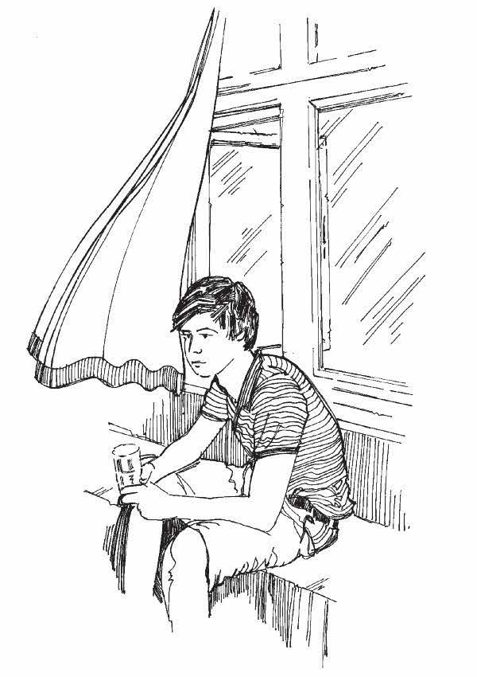

Resumen
- Algunas enfermedades, incluyendo las infecciones respiratorias como el sarampión, la meningitis y la gripe, se transmiten por gotitas en el aire (tos y estornudos). En las casas que están sofocadas y mal ventiladas (con poco flujo de aire), una persona enferma puede infectar a todas las demás personas que viven en la misma casa.
- Otras enfermedades se propagan a través de agua contaminada o mala higiene, ausencia de refugio o condiciones de vida abarrotadas. El que muchas personas vivan juntas en un lugar pequeño y estrecho, puede ayudar a que una epidemia se propague más y más rápido. La falta de recipientes de agua limpia y de inodoros también puede facilitar la propagación de una enfermedad.
Lo que necesita saber
- Si los gérmenes se propagan por gotitas en el aire, como ocurre con las infecciones respiratorias, los gérmenes pueden concentrarse más en habitaciones u hogares con poca ventilación en los que una persona enferma tose o estornuda. Por lo tanto, es más probable que la persona enferma infecte a otras personas que viven en el mismo espacio.
- Para reducir el riesgo de contagiar enfermedades a otros, es una buena idea ventilar las casas. Abra las ventanas o puertas para permitir que entre el aire fresco y para que el aire viciado y viejo salga.
- Cuando muchas personas viven juntas en el mismo espacio, también pueden contagiarse de infecciones fácilmente de unos a otros. Si es posible, las personas deben tener suficiente espacio para moverse y respirar libremente.
- Siempre ventile los refugios compartidos o comunales y el alojamiento de emergencia.
- Los refugios adecuados que protegen a las personas de la lluvia, el viento, el frío y el sol también ayudan a las personas enfermas a recuperarse de enfermedades.
- Las enfermedades que se propagan a través del agua contaminada o el saneamiento deficiente (enfermedades diarreicas, cólera, tifoidea, hepatitis E, por ejemplo) se propagarán más fácilmente si no hay agua limpia o si los inodoros limpios y adecuados no están cerca de donde se refugian las personas.
Lo que puede hacer
- Cuando se produce un brote de enfermedades transmitidas por el aire, es importante informar a su comunidad sobre la importancia de una buena ventilación y alentarlos a que abran las ventanas y puertas regularmente.
- Aconseje a las personas que mantengan las ventanas abiertas si el clima lo permite, especialmente si están cuidando a una persona enferma.
- Cocinar con carbón o leña en un espacio cerrado (una habitación o refugio sin ventanas) puede dañar a las personas enfermas con enfermedades transmitidas por el aire. Es importante tener suficiente flujo de aire para eliminar el humo y los vapores.
- Hable con la comunidad sobre la importancia de un suministro de agua limpia, saneamiento, lavado de manos y una buena higiene de los alimentos. (Ver herramientas de acción 30 , 31 , 32 , 33 , 34 y 35 ).
- Cuando las personas se mudan después de un conflicto o desastre, los refugios a los que se mudan suelen ser menos buenos que aquellos a los que están acostumbrados. Ayude a las personas a tener el mejor refugio posible, que esté bien ventilado y tenga un buen suministro de agua, con letrinas e instalaciones cercanas para la eliminación de desechos. Aliente a las personas a lavarse las manos después de ir al baño, después de limpiar a un niño y antes de preparar o comer alimentos. Aliente a las personas a lavar los recipientes de almacenamiento de agua regularmente con agua y jabón, y a mantener el área alrededor del refugio libre de basura y desperdicios de animales.

Abrir las puertas y ventanas para tener una ventilación adecuada en el albergue